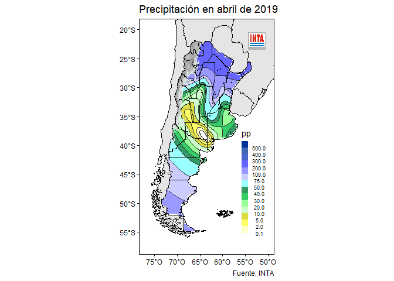

El paquete {agromet} incluye una serie de funciones para calcular índices y estadísticos climáticos e hidrológicos a partir de datos tidy. Por ejemplo umbrales() permite contar la cantidad de observaciones que cumplen una determinada condición y dias_promedios() devuelve el primer y último día del año promedio de ocurrencia de un evento.
Otras funciones como spi() funcionan como wrappers de funciones de otros paquetes y que buscan ser compatibles con el manejo de datos tidy.
Finalmente el paquete incluye una función de graficado de datos georeferenciados mapear() con el estilo y logo propios de INTA.
Instalación
Para instalar la versión de desarrollo desde GitHub, usá:
# install.packages("remotes")
remotes::install_github("AgRoMeteorologiaINTA/agromet", build_vignettes = TRUE)Ejemplos
A continuación se muestra el uso de algunas funciones. Podés encontrar más ejemplos y usos en la viñeta, con
vignette("estadisticas-e-indices-climaticos", "agromet")Si se quieren utilizar los datos con formato NH se puede utilizar la función leer_nh() y opcionalmente acceder a sus metadatos con metadatos_nh().
library(agromet)
library(dplyr)
archivo <- system.file("extdata", "NH0358.DAT", package = "agromet")
datos <- leer_nh(archivo)Días promedio
Si por ejemplo se quiere obtener el día de la primera y última helada en promedio, asumiendo que la ocurrencia de helada corresponde a temperatura mínima menor a 0°C, se puede utilizar la función dias_promedio() en el contexto de summarise().
datos %>%
filter(t_min <= 0) %>%
summarise(dias_promedio(fecha))
#> variable dia mes dia_juliano
#> 1 primer_dia 15 5 135
#> 2 ultimo_dia 13 9 256Mapear
La función mapear() grafica una variable dada en puntos discretos e irregulares (en general observaciones o datos derivados de estaciones meteorológicas) utilizando kriging. Se puede definir el título y epígrafe y opcionamente se puede incluir la cordillara para enmascarar la variable a graficar.
# Genero datos aleatorios
set.seed(496)
datos_aleatorios <- data.frame(metadatos_nh(), pp = rgamma(nrow(metadatos_nh()), 0.5, scale = 1)*70)
datos_aleatorios %>%
with(mapear(pp, lon, lat, cordillera = TRUE,
escala = escala_pp_diaria,
titulo = "Precipitación aleatoria",
fuente = "Fuente: datos de ejemplo"))
Cómo contribuir
Para contribuir con este paquete podés leer la siguiente guía para contribuir. Te pedimos también que revises nuestro Código de Conducta.